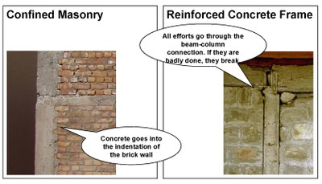
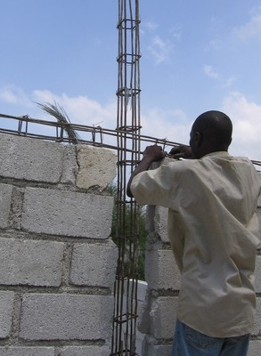
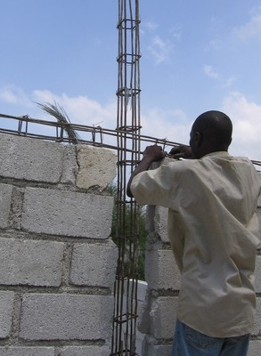
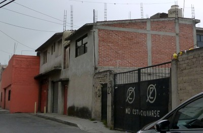

Mampostería, confinada [MCF]
La construcción de muros de mampostería en la cual los ladrillos se arman primero y luego se disponen columnas reforzadas y vigas. En este tipo de construcción el concreto amarra la mampostería y las columnas y vigas de sección pequeña ( llamadas columnas y viguetas de amarre ) limitan los paneles de mampostería . Este tipo de material está asociado con los muros resistentes a cargas laterales puesto que la mampostería soporta la gravedad y las cargas laterales y las columnas y vigas delgadas no constituyen pórticos rígidos pero si elementos de confinamiento. Edificio en el cual vigas y columnas son construidas antes que los muros de mampostería son armados se clasifican como Pórticos rellenos o Forjado relleno .

Construcción de mampostería confinada, mostrando que las unidades de mampostería se arman primero, seguido por la instalación de los elementos de confinamiento de concreto (T. Schacher)

Un edificio de mampostería confinada se puede reconocer por ser dentado , es decir , la interfaz entre el muro de hormigón y mampostería , como se muestra en la foto de la izquierda ; Esto es a diferencia estructura de hormigón armado , donde el marco se construye primero y no hay dentado . Sin embargo , la albañilería confinada en algunos países (como Argentina e Indonesia) se practica sin dentado (T. Schacher)
 

Mampostería confinada en construcción con bloques de hormigón, Haiti (B. Benjamin)

Muro de mampostería confinada en construcción el uso de unidades de ladrillo de arcilla, Chile (S. Brzev)

Edificio de mampostería confinada, Mexico (S. Brzev)

Construcción de mampostería confinada, Indonesia (J. Bothara)

Construcción de mampostería de piedra confinada, Algeria (M. Farsi)